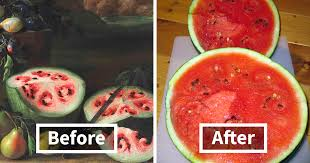
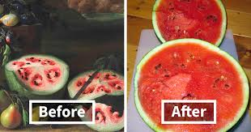
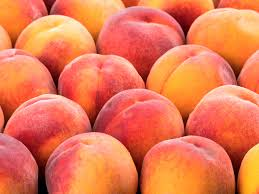
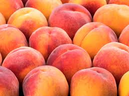

MOKGADI'S Fruits And Vegetables market
We pride ourselves in delivering Fresh and Healthly product to a our Beloved Customers
 



 


-
Just as important, Our markets also support healthy lifestyles and diets.. By their presence alone, farmers markets are proven to positively impact the health and diet of their community, especially in areas that otherwise lack sufficient access to fresh, healthy food.
Markets help maintain important social ties, linking rural and urban populations and even close neighbors in mutually rewarding exchange
Buying at markets encourages attention to the surrounding area and ongoing activities
Mokgadi's Fruits and Vegetables is a physical retail marketplace intended to sell foods directly by farmers to consumers. Farmers' markets may be indoors or outdoors and typically consist of booths, table
Our market produce and fruit are normally grown within a geographical region that is deemed local by the market's management.